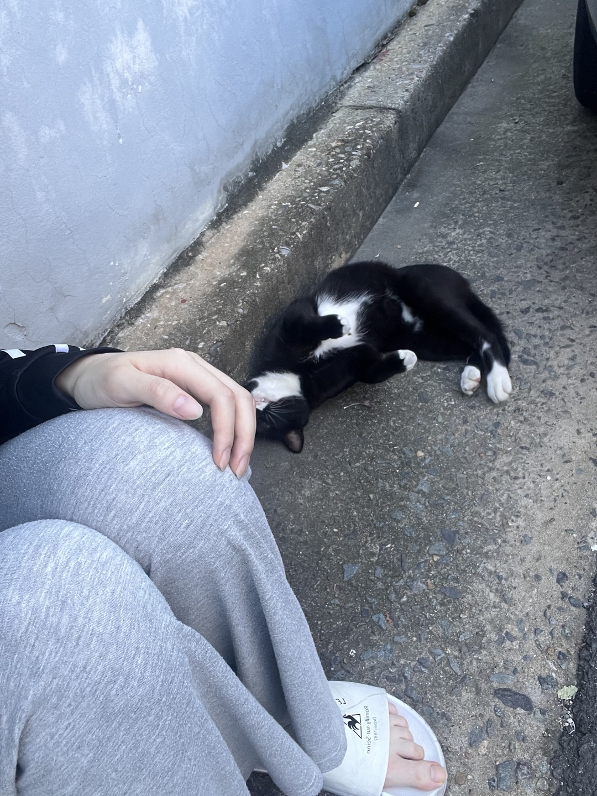

우리 동네 대장 고양이
오늘 하루 바쁘게 보냈다가 잠시 숨 돌리려고 앉은 길가에서 마주한 고양이. 나의 하루 일상을 달래주려고 온 고양이가 열심히 보낸 나를 위로해 주는 것 같아서 사진을 찍었다. 때론 바쁜 현대사회에서 인색한 사람들의 정보 다도 동물한테 위로가 받는 경우가 많은 것 같다. 사람들의 정이 그리우면서도 집이 없는 고양이한테 위로를 받은 하루였다. 나는 집이 있고 가족이 있는데도 공허한 이유는 무엇일까? 먹고살기 바쁘다고 가족끼리도 이야기하기 힘든 시대인 것 같다. 우연히 만난 고양이를 찍으면서 정이 그리워졌다.